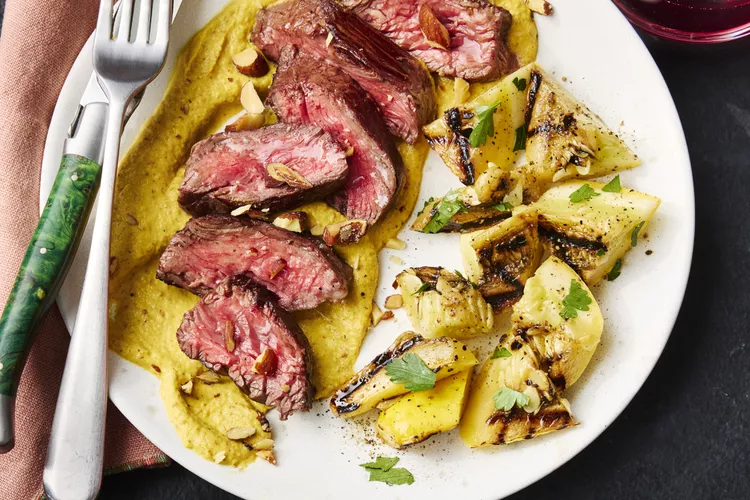

Hanger Steak with Romesco
Inspired by a dish at Cúrate in Asheville, North Carolina, this smoky and sweet yellow squash romesco sauce showcases peak-season produce.
Made with charred summer squash and bell pepper, salted smoked almonds, sherry vinegar, and spices, it’s packed with complexity and depth. Salt the sliced squash prior to grilling to extract moisture for a deeper, more concentrated flavor. The romesco is a perfect partner for beefy hanger steak and a side of roasted potatoes and grilled squash.
Ingredients:
- 3 yellow squash (about 8 ounces each), divided
- 5 tablespoons extra-virgin olive oil, divided, plus more for grill
- 3 1/2 teaspoons kosher salt, divided, divided
- 3/4 teaspoon black pepper, divided
- 1 yellow bell pepper
- 1 1/2 pounds hanger steak
- 1/2 cup salted smoked almonds, plus more chopped for garnish
- 1/2 teaspoon paprika
- 1/4 teaspoon ground coriander
- 1/4 teaspoon ground turmeric
- 3 tablespoons sherry vinegar, divided
- 2 tablespoons chopped fresh parsley
Steps:
- Preheat a gas grill to medium-high (400°F to 450°F). Cut 2 squash in half lengthwise, and toss with 1 tablespoon oil, 1/2 teaspoon salt, and 1/4 teaspoon black pepper; set aside. Cut remaining 1 squash on an angle into 1/4-inch-thick slices. Place squash slices in a single layer on a paper towel–lined baking sheet; sprinkle both sides evenly with 1/2 teaspoon salt. Let stand for 20 minutes.
- Meanwhile, toss bell pepper with 1/2 tablespoon oil; grill, uncovered, turning often, until charred all over, 10 to 12 minutes. Transfer bell pepper to a large heatproof bowl, and cover tightly with plastic wrap. Let stand for 10 minutes. Peel off charred bell pepper skin using a paper towel; discard skin, seeds, and any juices in bowl. Set aside. Do not turn off grill.
- Remove steak from refrigerator; let stand at room temperature 15 minutes. Meanwhile, pat salted squash slices dry with paper towels. Place squash slices and squash halves on oiled grates; grill, uncovered, turning once, until slices are charred on both sides and halves are tender, 8 to 12 minutes. Transfer squash slices to a blender. Set aside squash halves. Increase grill heat to high (450°F to 500°F).
- Sprinkle steak with 1 teaspoon salt and 1/4 teaspoon black pepper. Grill steak, uncovered, turning once, until charred and an instant-read thermometer inserted into thickest portion registers 125°F for medium-rare, about 8 minutes. Transfer to a cutting board; let rest 10 minutes.
- Meanwhile, add bell pepper, almonds, paprika, coriander, turmeric, 1 1/2 tablespoons oil, 1 tablespoon vinegar, and 1 teaspoon salt to blender with squash slices. Process until smooth, about 1 minute. Set aside romesco.
- Whisk together parsley, remaining 2 tablespoons oil, remaining 2 tablespoons vinegar, remaining 1/2 teaspoon salt, and remaining 1/4 teaspoon pepper in a medium bowl. Roughly chop squash halves, and toss with dressing in bowl.
- Slice steak, and serve with romesco and squash salad. Garnish with chopped smoked almonds.